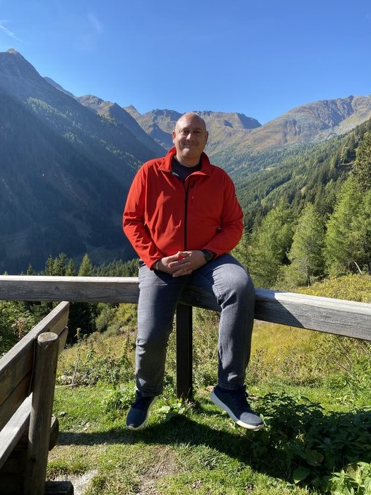

Martin Pintar
Biografie
Martin Pintar
Martin Pintar wurde 1980 in Klagenfurt geboren — in einer Stadt, in der das Wasser nicht weit ist und die Berge näher als anderswo. Er wuchs in einer liebevollen Familie auf, absolvierte eine Lehre und wechselte früh in die IT-Branche. Über glückliche Umwege fand er seinen Platz in der Finanzwelt, wo er seit über zwei Jahrzehnten, zuerst in der Wertpapierabwicklung und später im Digital Banking und im Innovationsmanagement, arbeitet. Präzision, Struktur und Verlässlichkeit prägen seinen Berufsalltag.
Der Anfang lag weiter zurück. Zwei schwere Erkrankungen — 2008 und 2012 — brachten ihn erstmals zum Stehen und warfen eine Frage auf, die ihn seither nicht mehr losließ: Was bleibt, wenn vieles wegfällt? Über Jahre arbeitete sie leise in ihm weiter. Erst 2025, als sich berufliche Umbrüche, familiäre Sorgen und erneute körperliche Einschnitte gleichzeitig auftürmten, fand das, was lange gereift hatte, endlich seine Worte.
Aus diesem Innehalten entstanden seine ersten Bücher: Ein Herbstblatt im Wind und Der Wind erinnert sich. Keine Ratgeber, keine Selbsthilfe — sondern ruhige, ehrliche Texte über das Vergehen, das Loslassen und die stillen Dinge, die bleiben. Die Sprache ist bewusst einfach gehalten, die Bilder nah an der Natur, die Haltung ohne Pathos.
Martin Pintar schreibt aus einem Bedürfnis heraus, das er lange nicht kannte: dem Bedürfnis, etwas festzuhalten — nicht für die Nachwelt, sondern für den Moment, in dem man aufschaut und merkt, dass das Leben leiser ist als gedacht.

Meine Bücher
Autorenseite auf Amazon
Alle Bücher auf Amazon entdecken →